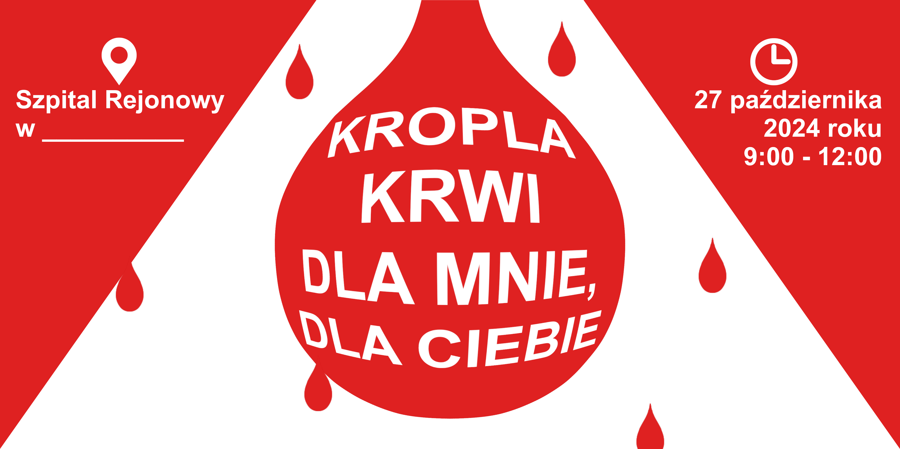
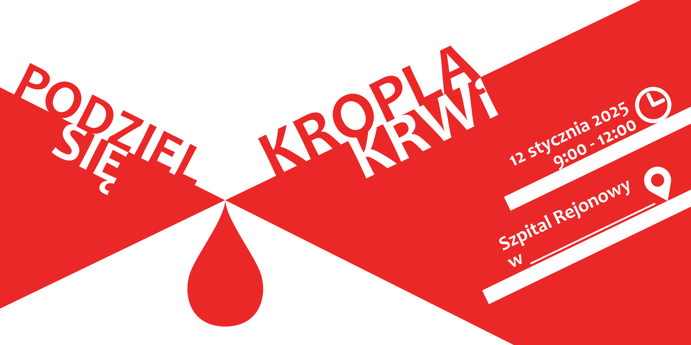
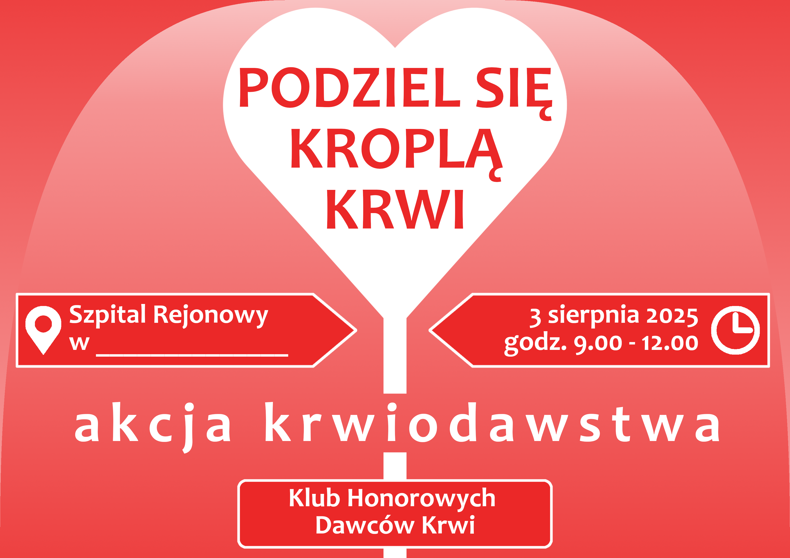
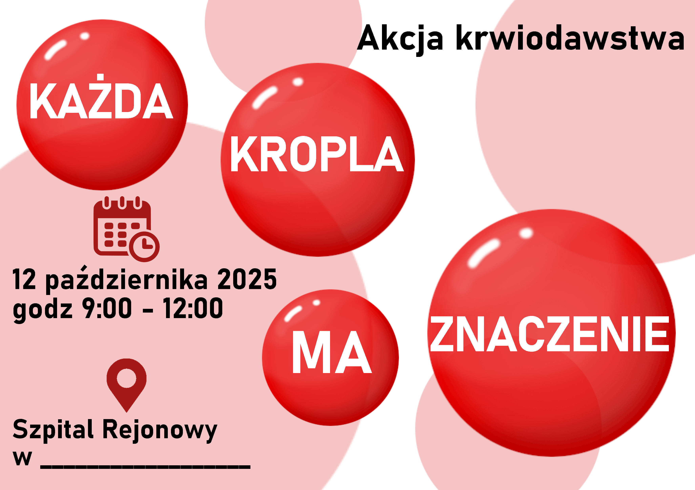
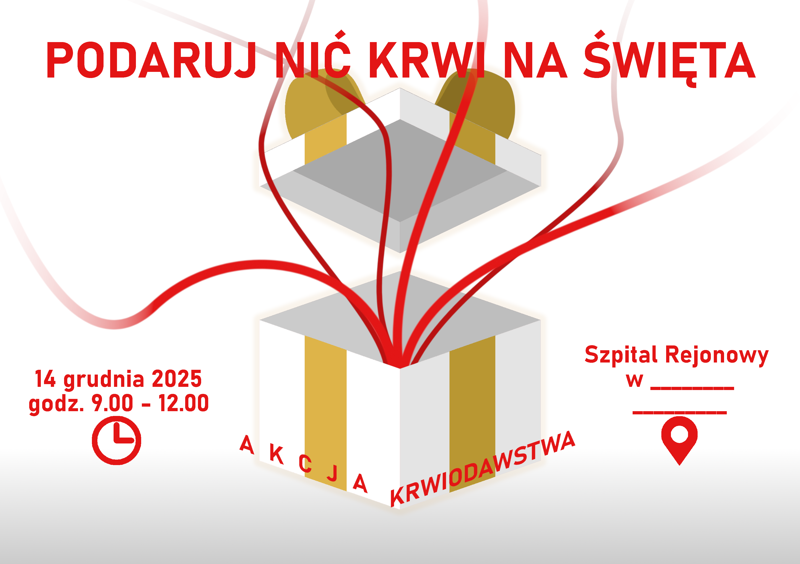
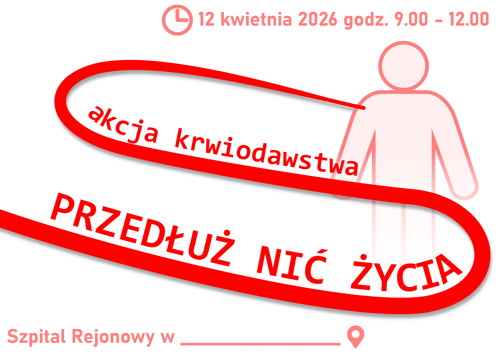
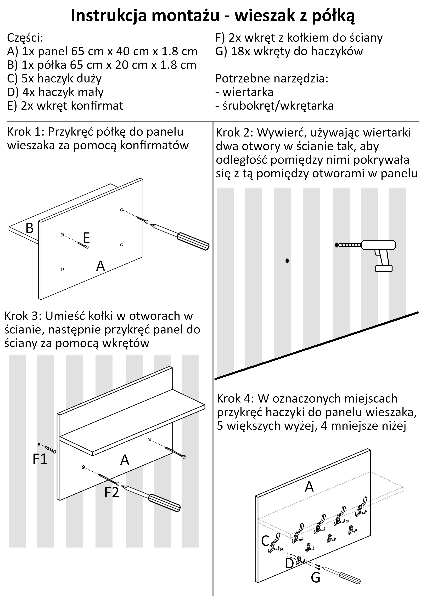

Graphic Design
Posters
A series of posters I've made (and keep making) for my local blood donor group.






User manuals
A set of user manuals I've prepared for a furniture company, that were shipped with the furniture in parts, letting clients put it together.


